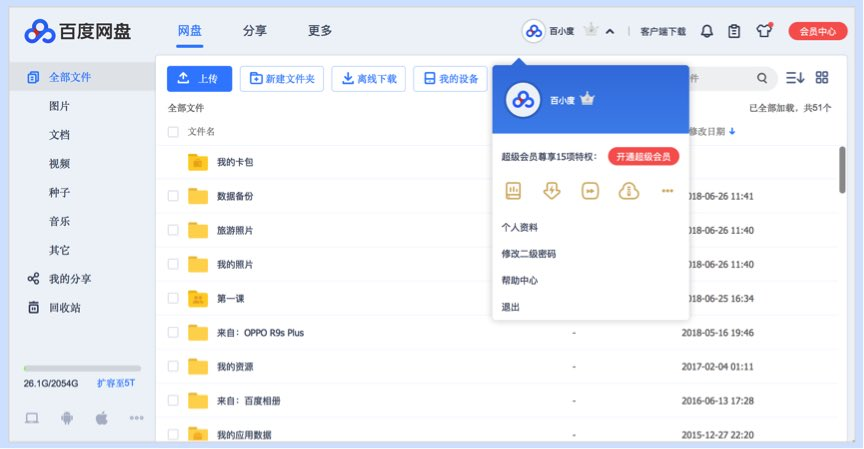

奶昔🥤
@realNyarime
@skywind3000 我一般会把国产软件全部丢在一个Windows的虚拟机里面跑，我不太能接受这些毒瘤在我电脑上面拉屎，他要是有能穿到虚拟机的能力说明他牛逼

LIN WEI
@skywind3000
百度网盘技术很好：从没同意它提权要求，他还能自己将自己加入右键菜单，安装后台服务；关掉自动更新了，它还是能隔三差五的自己更新；几次禁止它开机自动启动了，但过一段时间它又会偷偷把自己加入自动启动，又要你手动去关闭，使用百度网盘现在是一门技术活，你不得不用，但稍不留神，你就万劫不复！ https://t.co/NnSG6zCyRW